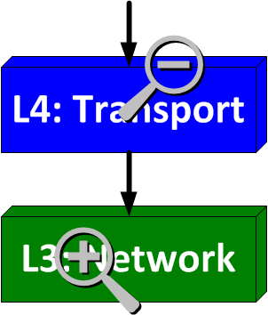

-
 CORPORATE INFO
CORPORATE INFO -
 OUR SERVICES
OUR SERVICES -
 STAY CONNECTED
STAY CONNECTED -
 CONTACT INFO
CONTACT INFO- E-mail:
Contact Us page - Telephone:
+1 972 863 CORE - Address:
3136 Round Tree Ln
Frisco, TX 75034-4589
- E-mail:
OSI Model in Practice
In the previous article, I summarized the seven layers of the OSI Reference Model and promised to show why it should be relevant. While the model can be (and usually is) a vague concept, it has a tremendously practical application in isolating problems with system-to-system communication. The OSI Model in practice can be approached in (at least) two different ways: linear vs. divide-and-conquer approaches.
Linear Approach
The linear approach is a method to begin at either the physical layer or application layer and work through each layer in a linear fashion until the problem is isolated. I like to refer to each starting point as either top-down (for starting with Layer 7) or bottom-up (for beginning at Layer 1). For example, if you are unable to reach Routerlabprep.com from your home computer, you could start by examining your physical network connection, verifying each component on a layer-by-layer basis. You could also start by verifying the operation of your web browser and working your way down. I generally don't prefer or recommend the Linear approach in most circumstances, since the algorithm used to isolate the problem may not always provide the quickest resolution. There are times where it pays to troubleshoot with a bottom-up strategy. A friend of mine is very fond of saying, "It's always the Physical Layer." I have wished many times that he weren't right. :/
Divide-and-Conquer Approach
The divide-and-conquer approach divides task of troubleshooting the problem in two and eliminates one half with each step, narrowing the potential source of the problem down to a specific layer or function. For me, the first step in a divide-and-conquer approach generally involves begining at Layer 3 to verify IP reachability. If the end-system is reachable, move up the stack (Layers 4-7). If not, then look closer at Layer 3 with a traceroute before proceeding down the stack (Layers 1-2).
Linear vs. Divide-and-Conquer
The numerous steps required for troubleshooting system-to-system communication dictate that any troubleshooting exercise can be (and many times, will be) a lengthy process. In comparison to the linear approach, the beauty of the divide-and-conquer approach manifests itself by shortening the time involved for most instances. Without getting too deep into the theorhetical mathematics behind this phenomenon, the divide-and-conquer method uses a type of recursion to find a match among the set of potential problems. With the sorts of complex problems that occur in networks, no one has the time to approach them in a linear fashion (unless it's the physical layer or a browser configuration problem, natch).
Practice Makes Perfect
Putting the OSI Model into action requires a lot of practice. As a network engineer, the reward for such hard work can be attained regardless of the nature of your expertise (whether operational, design, implementation or architectural). Take every opportunity you can to practice, even if only using your home computer to troubleshoot problems using the Internet and its many wonderous resources. In the next article, I'll discuss some common tools for troubleshooting Layers 1-4 of the OSI model, including a few that are invaluable to me, but seem to be neglected by some.